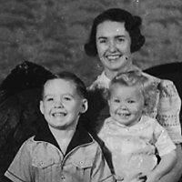

Russ put together this video for his dad's 65th. Made from 8mm footage from the 60's and a few photos most likely taken by Big.
Really Old J.P.W. Recording
This audio recording was made by Big's brother, J.P.W Brown. (I think)
"My idea about this tape recording is to tell about the early years of my life. The types of things that I experienced have long since ceased to exist. I think it might be of interest to the later generations...so, here it goes."
Topics include steam engine cars, the brown family dairy business, the nashville streetcar system and a lengthy description of the house on Dickerson Road.
Big's Photos
These are the photos that Benton has been scanning from Big's box of old negatives. This is only the tip of the iceberg.

Volume 2
Volume 3
Volume 4
Volume 5
Photos of Tommy Brown found in Big's photo box
2008 Christmas Recording
On December 25, 2008 Bert Brown, Larry Brown, John Brown, Allen Brown, and Bill Brown sat down together to record some family history before Christmas dinner.
Benton Brown, the interviewer, got the conversation started by asking what they remember about Christmas on Dickerson Road...
Topics include vacuum cleaners, polish refugees, calculated risk taking and sex education.
This is just the audio of them laughing.